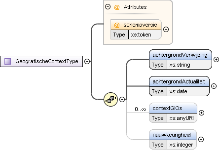

Complex Type gio:GeografischeContextType
| Namespace | https://standaarden.overheid.nl/stop/imop/gio/ | ||||||||||
| Definitie |
Dit type definieert de geografische context waarin een besluit tot het vaststellen van een GIO genomen is. |
||||||||||
| Informatie |
Deze bestaat uit een verwijzing naar de achtergrond die gezien is door het bevoegd gezag ten tijde van het nemen van het besluit. Let op, deze achtergrond heeft vooral een juridische betekenis en de achtergrond hoeft dus niet overeen te komen met de achtergrond die getoond wordt op de publicatieportalen. Beperkingen Afhankelijk van de manier waarop het GIO is vastgesteld zijn de verschillende onderdelen wel of niet aanwezig |
||||||||||
| Informatiemodel | |||||||||||
| Diagram |

|
||||||||||
| Gebruikt door |
|
||||||||||
| Kinderen | Element gio:GeografischeContextType / gio:achtergrondActualiteit, Element gio:GeografischeContextType / gio:achtergrondVerwijzing, Element gio:GeografischeContextType / gio:contextGIOs, Element gio:GeografischeContextType / gio:nauwkeurigheid | ||||||||||
| Attributen |
|
||||||||||
| Beperkingen |
|
Element gio:GeografischeContextType / gio:achtergrondVerwijzing
| Namespace | https://standaarden.overheid.nl/stop/imop/gio/ | ||||||||
| Definitie |
Een verwijzing naar de achtergrondkaart die getoond is bij het vaststellen van het GIO |
||||||||
| Informatie |
Het gebeurt vaak dat de grenzen van het GIO herkenbare elementen (bijvoorbeeld een sloot) op de achtergrondkaart volgt. Hiermee wordt duidelijk gemaakt dat de bedoelde grens van dat GIO de sloot is zoals die ligt in het terrein en niet de (wellicht vereenvoudigde) kartografische representatie van de sloot. De bedoeling van de achtergrond aanduiding is dat een mens, aan de hand van deze aanduiding de gebruikte achtergrond kan vinden indien iemand, bijv. een rechter, daarom vraagt. Om te borgen dat het GIO ten allen tijden weer getoond kan worden zoals deze getoond is ten tijde van de vaststelling, moet het BG de gebruikte achtergrondkaart archiveren. Indien gekozen wordt voor TOP10NL, dan is deze archivering overbodig, omdat TOP10NL tijdreisbestendig wordt uitgeleverd. Wordt een andere waarde dan TOP10NL gebruikt, dan is het BG zelf verantwoordelijk voor archivering van de gebruikte achtergrond. Archivering conform de Archiefwet volstaat. Van juridisch belang is ook de gio:achtergrondActualiteit van de achtergrondskaart. De achtergrond aanduiding is geen waardenlijst, het BG is vrij in haar keuze voor een achtergrondkaart. Om uniformiteit te bewerkstelligen is er wel een aanbeveling: Aanbeveling voor het veld achtergrondVerwijzing: Wanneer de dataset beschikbaar is op het Nationaal Georegister, gebruik dan het veld ‘Titel van de bron’ of 'Alternatieve titel' zoals beschreven in ‘Nederlands profiel op ISO 19115 voor geografie’. Deze titel is te vinden in het XML metadata bestand. Dit bestand is te vinden op de betreffende kaartpagina in het Nationaal Georegister (via de download/weergave knop). Voorbeelden veel gebruikte achtergrondkaart aanduidingen:
|
||||||||
| Informatiemodel | Achtergrondverwijzing (eigenschap van Geografische context) | ||||||||
| Verwijzingen | gio:achtergrondActualiteit | ||||||||
| Diagram | |||||||||
| Type | xs:string | ||||||||
| Eigenschappen |
|
Element gio:GeografischeContextType / gio:achtergrondActualiteit
| Namespace | https://standaarden.overheid.nl/stop/imop/gio/ | ||||||
| Definitie |
Aanduiding van de actualiteit van de achtergrondkaart waar Achtergrondverwijzing (eigenschap van Geografische context) naar verwijst |
||||||
| Informatie |
Invulinstructie Wanneer de dataset beschikbaar is op https://docs.geostandaarden.nl/md/mdprofiel-iso19115/ het Nationaal Georegister, gebruik dan het veld ‘Datum van de bron’ zoals beschreven in ‘ Nederlands profiel op ISO 19115 voor geografie’. Momenteel is de enige achtergrondkaart die voldoende tijdreisbestendig wordt bijgehouden de TOP10NL kaart. Indien gekozen wordt voor een andere waarde dan TOP10NL dan is het BG zelf verantwoordelijk voor archivering van de gebruikte achtergrond. Archivering conform de Archiefwet volstaat. |
||||||
| Informatiemodel | Achtergrond actualiteit (eigenschap van Geografische context) | ||||||
| Verwijzingen | gio:achtergrondVerwijzing | ||||||
| Diagram | |||||||
| Type | xs:date | ||||||
| Eigenschappen |
|
Element gio:GeografischeContextType / gio:contextGIOs
| Namespace | https://standaarden.overheid.nl/stop/imop/gio/ | ||||||
| Definitie |
een lijst van één of meer verwijzingen naar bestaande GIOs die als context gebruikt voor het bepalen van een nieuwe GIO zijn gebruikt |
||||||
| Informatie |
In plangebieden (waar vaak nog geen actuele topografische achtergrond voorhanden is) kan naast de gebruikte achtergrondskaart een bestaand GIO als context gebruikt voor het bepalen van een nieuw GIO (bijvoorbeeld: er is al een besluit genomen over het spoorwegtracé en nu moet er nog besloten worden over de plek van het station; als het station in een weilandengebied wordt gepland is het fijn om te weten waar het spoor gaat lopen). Dit element bevat een lijst met JOIN-identificaties die getoond zijn bij het nemen van het besluit over dit GIO. Het gaat hier altijd om expression identificaties. |
||||||
| Informatiemodel | Context GIO (eigenschap van Geografische context) | ||||||
| Diagram | |||||||
| Type | xs:anyURI | ||||||
| Eigenschappen |
|
Element gio:GeografischeContextType / gio:nauwkeurigheid
| Namespace | https://standaarden.overheid.nl/stop/imop/gio/ | ||||||
| Definitie |
Gerealiseerde geometrische nauwkeurigheid van de geometrie van het object ten opzichte van de werkelijkheid (zoals in de achtergrond is weergegeven) uitgedrukt in decimeters. |
||||||
| Informatie |
Als het GIO tot stand is gekomen door een berekening (bijvoorbeeld de uitkomst van een simulatie), dan is het van belang te weten met welke mate van nauwkeurigheid de berekeningen zijn uitgevoerd zodat grensgevallen (huis valt net wel/niet in het gebied) beter te duiden zijn. |
||||||
| Informatiemodel | Nauwkeurigheid (eigenschap van Geografische context) | ||||||
| Diagram | |||||||
| Type | xs:integer | ||||||
| Eigenschappen |
|